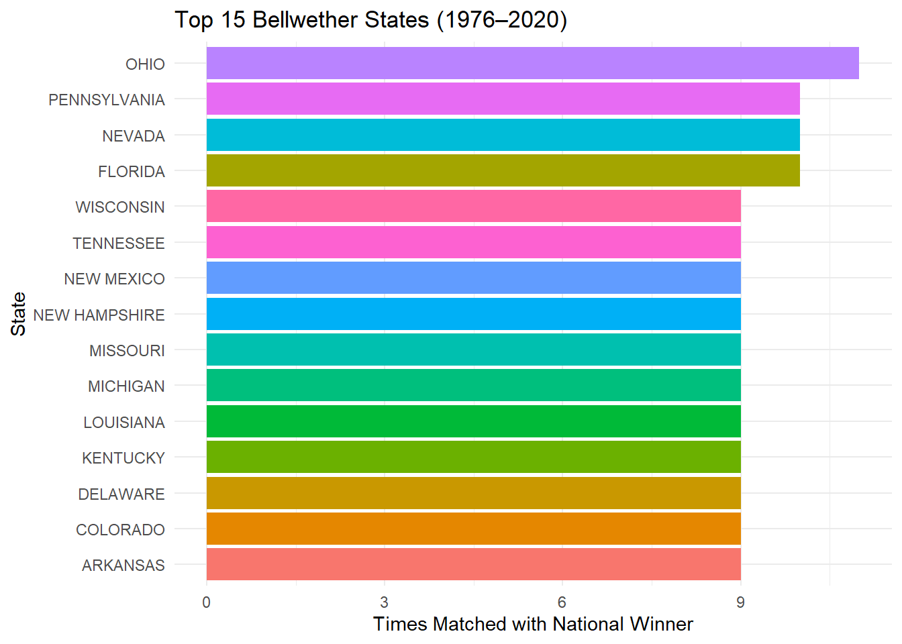
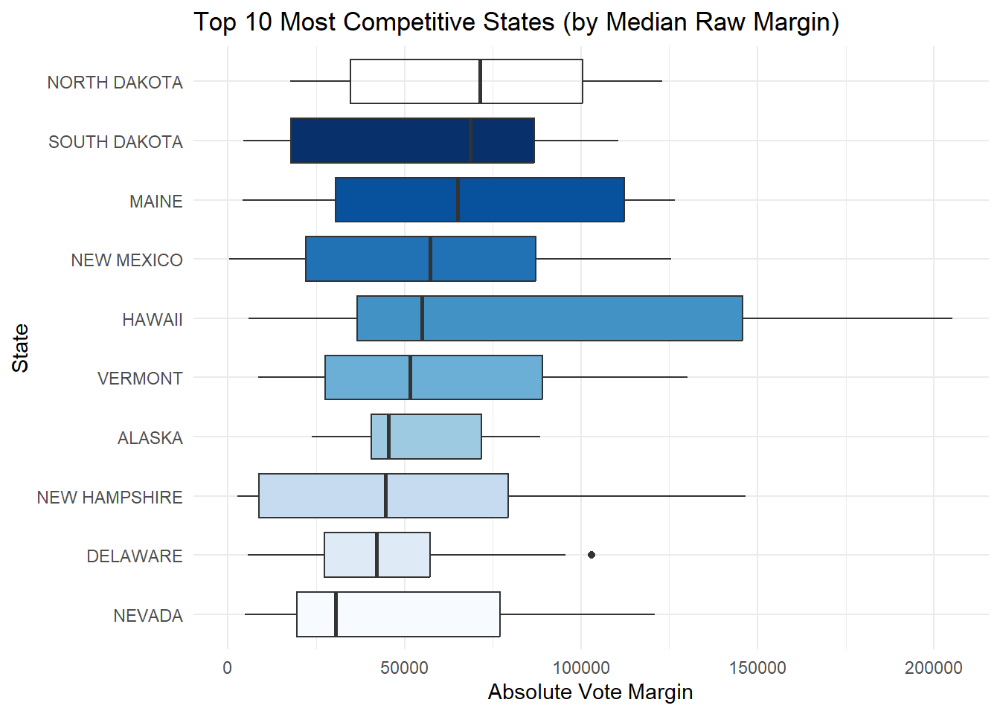
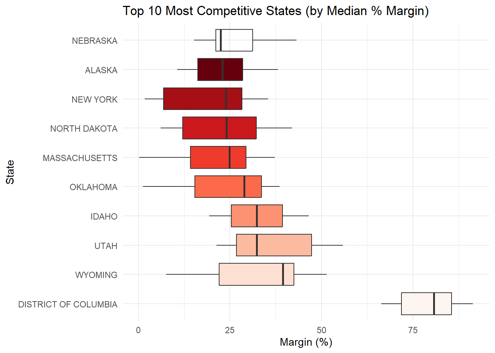
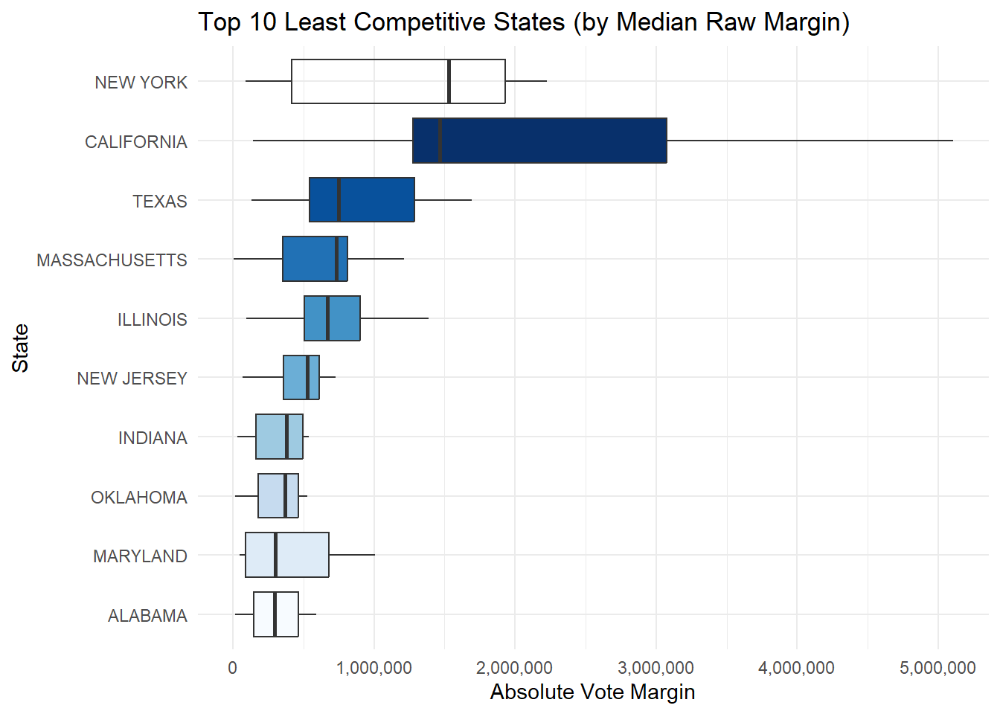
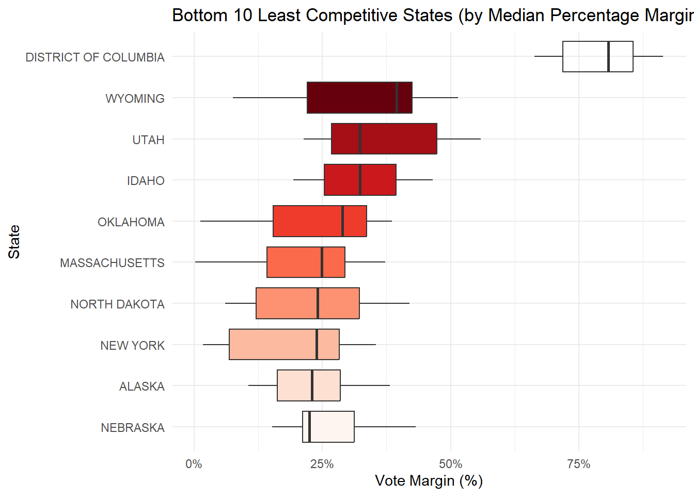

This interactive map visualizes U.S. presidential election outcomes from 1976 to 2020. Use the slider to select a year and view which party won each state. Color intensity indicates the margin of victory: darker shades represent decisive wins, while lighter shades highlight more competitive races. Hover over states for vote counts, margins, and party breakdowns.
States are shaded by party and competitiveness — darker = larger margin, lighter = tighter race. Use the slider to explore results year by year.
Bellwether States Analysis
First, we are going to have to determine who won the Presidential Election every year from 1976 to 2020. This is only 12 elections, so there are minimal amounts of joins.

Since 1976, Ohio Pennslyvania, Nevada, and Florida have aligned with the winners of the general election the most. Interestingly enough, states like Tennessee, New Mexico, Missouri, Louisiana, Kentucky, and Delaware also have matched with the national winner, even though these states are not considered swing states today. If we are to use data since 1976, seeing how these states vote in a given election should give us a good idea as to who won the election.
Most Competitive States
To determine which states are the most competitive, we are going to have to generate a column that subtracts the differences between the matchups in each state within each year and extracts a margin in both raw votes and as a percentage.
Most Competitive by raw margins

By raw margins, the states of Nevada, Delaware, New Hampshire seem to be consistent in how much their states are consistently close when it comes to Presidential elections. This is raw votes.
The benefits of targeting these kind of states are:
1) Being able to flip the state while targeting fewer voters.
2) Because these states are smaller, they are generally less crowded with national media attention than the bigger states.
Some of the negatives of targeting these states include:
1) Fewer electoral votes, because these states are smaller in populations
2) Volatility in that small states can swing fast due to miniscule demographic shifts, third-party influence, or localized issues
3) Targeting these states as a main strategy lowers your ROI, because a marginal win in these smaller states is done at the expense of losing a much larger and influential swing state with more electoral votes.
Most Competitive States by Percentage Margins

Nevada yet again, comes out on top with being the most competitive state, this time by percentage margin. All of these states have electoral college votes of 7 or more, and 5 of the 7 modern day swing states are on this top 10 list, showing that since at least 1976, they have consistently been among the most competitive states.
Some of the benefits of targeting these kinds of states in Presidential Elections include:
1) Scalable impact because even small changes in overall persuasion can shift the outcome.
2) Cost-effective, because of a higher ROI. More money spent but with the benefit of a higher electoral vote count.
3) Electoral College Weight, because these states have more electoral votes than smaller states.
Some of the negatives of targeting these states would be:
1) More raw vote totals needed, so even if you might get a higher electoral vote count, you do it at the expense of more money invested.
2) The nature of these states being this close and because of their total electoral counts means more attention from both parties, which means voters become inundated with nonstop media coverage, ads, and canvassers, causing potential voter fatigue.
Least Competitive States
For this section, we are just going to look at the inverse of the most competitive states.

By raw votes, New York, California, and Texas are the least competitive states. Not surprising, because what do they have in common? The top 3 least competitive states are in the top 4 of population in the United States. This is why looking at the margins by percentage is just as, if not more important, because context matters.

Not a surprise, the District of Columbia is the least competitive set of electoral votes in the country, at least since 1976. Wyoming, Utah, Idaho, and Oklahoma also seem to be states that are not typically competitive and are reliable to vote in a single direction.
Source Code
---title: "US Presidential Election Results (1976 - 2020)"format: html: code-fold: true code-tools: trueruntime: shinyexecute: echo: trueeditor: markdown: wrap: 72---## Dashboard {.tabset .tabset-pills .nav-stacked}```{r setup, include=FALSE}library(shiny)library(tidyverse)library(plotly)library(pander)```### General Interactive Map```{r, echo = FALSE}#| panel: sidebarsliderInput("year", "Select Election Year:", min = 1976, max = 2020, value = 2020, step = 4, sep = "")``````{r, echo = FALSE, warning = FALSE, message = FALSE}#| context: serverlibrary(shiny)library(tidyverse)library(plotly)library(maps)# Load US map and dataus_map <- map_data("state")decadesdata <- read_csv("C:/Users/micha/OneDrive/Data Wrangling & Visualization/Week 9/Task Data Search/1976-2020-president.csv")election_winners <- tribble( ~year, ~winner, ~matchup, 1976, "CARTER, JIMMY (DEMOCRAT)", "CARTER, JIMMY vs. FORD, GERALD", 1980, "REAGAN, RONALD (REPUBLICAN)", "REAGAN, RONALD vs. CARTER, JIMMY", 1984, "REAGAN, RONALD (REPUBLICAN)", "REAGAN, RONALD vs. MONDALE, WALTER", 1988, "BUSH, GEORGE H. W. (REPUBLICAN)", "BUSH, GEORGE H. W. vs. DUKAKIS, MICHAEL", 1992, "CLINTON, BILL (DEMOCRAT)", "CLINTON, BILL vs. BUSH, GEORGE H. W.", 1996, "CLINTON, BILL (DEMOCRAT)", "CLINTON, BILL vs. DOLE, BOB", 2000, "BUSH, GEORGE W. (REPUBLICAN)", "BUSH, GEORGE W. vs. GORE, AL", 2004, "BUSH, GEORGE W. (REPUBLICAN)", "BUSH, GEORGE W. vs. KERRY, JOHN", 2008, "OBAMA, BARACK (DEMOCRAT)", "OBAMA, BARACK vs. MCCAIN, JOHN", 2012, "OBAMA, BARACK (DEMOCRAT)", "OBAMA, BARACK vs. ROMNEY, MITT", 2016, "TRUMP, DONALD J. (REPUBLICAN)", "CLINTON, HILLARY vs. TRUMP, DONALD J.", 2020, "BIDEN, JOSEPH R. (DEMOCRAT)", "BIDEN, JOSEPH R. vs. TRUMP, DONALD J.")# Define color scalerating_colors_shaded <- c( "Safe DEMOCRAT" = "#244999", "Likely DEMOCRAT" = "#577CCC", "Lean DEMOCRAT" = "#8AAFFF", "Tilt DEMOCRAT" = "#949BB3", "Safe REPUBLICAN" = "#D22532", "Likely REPUBLICAN" = "#FF5865", "Lean REPUBLICAN" = "#FF8B98", "Tilt REPUBLICAN" = "#CF8980", "Missing" = "#D3D3D3")# Function to process election dataprocess_year <- function(yr, data) { results <- data %>% filter(year == yr, party_simplified %in% c("DEMOCRAT", "REPUBLICAN")) %>% group_by(state, party_simplified) %>% summarise(votes = sum(candidatevotes), .groups = "drop") %>% pivot_wider(names_from = party_simplified, values_from = votes, values_fill = 0) %>% mutate( total_votes = DEMOCRAT + REPUBLICAN, margin = abs(DEMOCRAT - REPUBLICAN) / total_votes, winner = if_else(REPUBLICAN > DEMOCRAT, "REPUBLICAN", "DEMOCRAT"), margin_label = case_when( margin >= 0.15 ~ "Safe", margin >= 0.10 ~ "Likely", margin >= 0.05 ~ "Lean", TRUE ~ "Tilt" ), rating_category = paste(margin_label, winner), rating_category = ifelse(rating_category %in% names(rating_colors_shaded), rating_category, "Missing"), fill_color = as.character(rating_colors_shaded[rating_category]), tooltip = paste0( toupper(state), "<br>", "Democrat: ", formatC(DEMOCRAT, format = "d", big.mark = ","), "<br>", "Republican: ", formatC(REPUBLICAN, format = "d", big.mark = ","), "<br>", "Winner: ", winner, "<br>", "Margin: ", scales::percent(margin) ), region = tolower(state) ) df <- left_join(us_map, results, by = "region") %>% filter(!is.na(tooltip)) %>% # 🚨 This removes stray polygon ghosts group_by(region) %>% tidyr::fill(tooltip, fill_color, .direction = "downup") %>% ungroup() df <- df %>% mutate( tooltip = ifelse(is.na(tooltip), paste0(toupper(region), "<br>No data"), tooltip), fill_color = ifelse(is.na(fill_color), "#D3D3D3", fill_color) ) return(df)}``````{r election_map, echo = FALSE}# Plotly renderrenderPlotly({ year_selected <- as.numeric(input$year) df <- process_year(year_selected, decadesdata) # 1. State-level winners state_winners <- decadesdata %>% filter(year == year_selected, party_simplified %in% c("DEMOCRAT", "REPUBLICAN")) %>% group_by(state, candidate, party_simplified) %>% summarise(votes = sum(candidatevotes), .groups = "drop") %>% group_by(state) %>% slice_max(order_by = votes, n = 1, with_ties = FALSE) %>% distinct(state, .keep_all = TRUE) %>% mutate(year = year_selected)title_data <- election_winners %>% filter(year == year_selected)title_text <- paste0( "Election Results - ", year_selected)# Plotplot_ly( data = df, type = "scatter", mode = "none", x = ~long, y = ~lat, split = ~group, fill = "toself", fillcolor = ~fill_color, text = ~tooltip, hoveron = "fills", hoverinfo = "text", hoverlabel = list( font = list(size = 20, color = "white") ), line = list(color = "black", width = 0.5), showlegend = FALSE) %>% layout( title = list( text = title_text, x = 0.5, xanchor = "center", font = list(size = 15) ), xaxis = list(visible = FALSE), yaxis = list(visible = FALSE, scaleanchor = "x") )})```This interactive map visualizes U.S. presidential election outcomes from1976 to 2020. Use the slider to select a year and view which party woneach state. Color intensity indicates the margin of victory: darkershades represent decisive wins, while lighter shades highlight morecompetitive races. Hover over states for vote counts, margins, and partybreakdowns.*States are shaded by party and competitiveness — darker = largermargin, lighter = tighter race. Use the slider to explore results yearby year.*### Bellwether States Analysis<br> First, we are going to have to determine who won the PresidentialElection every year from 1976 to 2020. This is only 12 elections, sothere are minimal amounts of joins. <br>```{r, echo = FALSE}election_winners <- tribble( ~year, ~winner_party, 1976, "DEMOCRAT", 1980, "REPUBLICAN", 1984, "REPUBLICAN", 1988, "REPUBLICAN", 1992, "DEMOCRAT", 1996, "DEMOCRAT", 2000, "REPUBLICAN", 2004, "REPUBLICAN", 2008, "DEMOCRAT", 2012, "DEMOCRAT", 2016, "REPUBLICAN", 2020, "DEMOCRAT")state_results <- decadesdata %>% filter(party_simplified %in% c("DEMOCRAT", "REPUBLICAN")) %>% group_by(year, state, party_simplified) %>% summarise(votes = sum(candidatevotes), .groups = "drop") %>% group_by(year, state) %>% slice_max(order_by = votes, n = 1, with_ties = FALSE) %>% ungroup()bellwether_analysis <- state_results %>% left_join(election_winners, by = "year") %>% mutate( match_national = if_else(party_simplified == winner_party, 1, 0) )DT::datatable(bellwether_analysis)bellwether_summary <- bellwether_analysis %>% group_by(state) %>% summarise( times_matched = sum(match_national), total_elections = n(), match_rate = round(100 * times_matched / total_elections, 1) ) %>% arrange(desc(times_matched))bellwether_summary %>% top_n(10, times_matched) %>% ggplot(aes(x = reorder(state, times_matched), y = times_matched, fill = state)) + geom_bar(stat = "identity") + coord_flip() + labs( title = "Top 15 Bellwether States (1976–2020)", x = "State", y = "Times Matched with National Winner" ) + theme_minimal() + theme(legend.position = "none") ```<br> Since 1976, Ohio Pennslyvania, Nevada, and Florida have alignedwith the winners of the general election the most. Interestingly enough,states like Tennessee, New Mexico, Missouri, Louisiana, Kentucky, andDelaware also have matched with the national winner, even though thesestates are not considered swing states today. If we are to use datasince 1976, seeing how these states vote in a given election should giveus a good idea as to who won the election.### Most Competitive StatesTo determine which states are the most competitive, we are going to haveto generate a column that subtracts the differences between the matchupsin each state within each year and extracts a margin in both raw votesand as a percentage.<br> **Most Competitive by raw margins** <br>```{r, warning = FALSE, echo = FALSE}state_margins <- decadesdata %>% filter(party_simplified %in% c("DEMOCRAT", "REPUBLICAN")) %>% group_by(year, state, party_simplified) %>% summarise(votes = sum(candidatevotes), .groups = "drop") %>% pivot_wider(names_from = party_simplified, values_from = votes, values_fill = 0) %>% mutate( total_votes = DEMOCRAT + REPUBLICAN, abs_margin = abs(DEMOCRAT - REPUBLICAN), pct_margin = abs_margin / total_votes * 100, winner = if_else(REPUBLICAN > DEMOCRAT, "REPUBLICAN", "DEMOCRAT") ) %>% select(year, state, winner, abs_margin, pct_margin)top10_abs <- state_margins %>% group_by(state) %>% summarise(mean_abs_margin = mean(abs_margin, na.rm = TRUE)) %>% slice_min(mean_abs_margin, n = 10) %>% pull(state)top10_abs_summary <- state_margins %>% group_by(state) %>% summarise(mean_abs_margin = mean(abs_margin, na.rm = TRUE)) %>% slice_min(mean_abs_margin, n = 10)top10_median_abs <- state_margins %>% group_by(state) %>% summarise(median_abs_margin = median(abs_margin, na.rm = TRUE)) %>% arrange(median_abs_margin) %>% slice(1:10)state_margins %>% filter(state %in% top10_median_abs$state) %>% mutate(state = factor(state, levels = top10_median_abs$state)) %>% ggplot(aes(x = state, y = abs_margin, fill = state)) + geom_boxplot() + coord_flip() + scale_fill_brewer(palette = "Blues") + labs( title = "Top 10 Most Competitive States (by Median Raw Margin)", x = "State", y = "Absolute Vote Margin" ) + theme_minimal() + theme(legend.position = "none")```<br> By raw margins, the states of Nevada, Delaware, New Hampshire seemto be consistent in how much their states are consistently close when itcomes to Presidential elections. This is raw votes. <br>**The benefits of targeting these kind of states are:***1)* Being able to flip the state while targeting fewer voters.*2)* Because these states are smaller, they are generally less crowdedwith national media attention than the bigger states.**Some of the negatives of targeting these states include:***1)* Fewer electoral votes, because these states are smaller inpopulations*2)* Volatility in that small states can swing fast due to minisculedemographic shifts, third-party influence, or localized issues*3)* Targeting these states as a main strategy lowers your ROI, becausea marginal win in these smaller states is done at the expense of losinga much larger and influential swing state with more electoral votes.<br> ***Most Competitive States by Percentage Margins*** <br>```{r, warning = FALSE, echo = FALSE}state_margins <- decadesdata %>% filter(party_simplified %in% c("DEMOCRAT", "REPUBLICAN")) %>% group_by(year, state, party_simplified) %>% summarise(votes = sum(candidatevotes), .groups = "drop") %>% pivot_wider(names_from = party_simplified, values_from = votes, values_fill = 0) %>% mutate( total_votes = DEMOCRAT + REPUBLICAN, abs_margin = abs(DEMOCRAT - REPUBLICAN), pct_margin = abs_margin / total_votes * 100, winner = if_else(REPUBLICAN > DEMOCRAT, "REPUBLICAN", "DEMOCRAT") ) %>% select(year, state, winner, abs_margin, pct_margin)top10_abs <- state_margins %>% group_by(state) %>% summarise(mean_abs_margin = mean(abs_margin, na.rm = TRUE)) %>% slice_min(mean_abs_margin, n = 10) %>% pull(state)top10_abs_summary <- state_margins %>% group_by(state) %>% summarise(mean_abs_margin = mean(abs_margin, na.rm = TRUE)) %>% slice_min(mean_abs_margin, n = 10)top10_median_pct <- state_margins %>% group_by(state) %>% summarise(median_pct_margin = median(pct_margin, na.rm = TRUE)) %>% arrange(desc(median_pct_margin)) %>% slice(1:10)# Plotstate_margins %>% filter(state %in% top10_median_pct$state) %>% mutate(state = factor(state, levels = top10_median_pct$state)) %>% ggplot(aes(x = state, y = pct_margin, fill = state)) + geom_boxplot() + coord_flip() + scale_fill_brewer(palette = "Reds") + labs( title = "Top 10 Most Competitive States (by Median % Margin)", x = "State", y = "Margin (%)" ) + theme_minimal() + theme(legend.position = "none")```<br> Nevada yet again, comes out on top with being the most competitivestate, this time by percentage margin. All of these states haveelectoral college votes of 7 or more, and 5 of the 7 modern day swingstates are on this top 10 list, showing that since at least 1976, theyhave consistently been among the most competitive states.**Some of the benefits of targeting these kinds of states inPresidential Elections include:***1)* Scalable impact because even small changes in overall persuasioncan shift the outcome.*2)* Cost-effective, because of a higher ROI. More money spent but withthe benefit of a higher electoral vote count.*3)* Electoral College Weight, because these states have more electoralvotes than smaller states.**Some of the negatives of targeting these states would be:***1)* More raw vote totals needed, so even if you might get a higherelectoral vote count, you do it at the expense of more money invested.*2)* The nature of these states being this close and because of theirtotal electoral counts means more attention from both parties, whichmeans voters become inundated with nonstop media coverage, ads, andcanvassers, causing potential voter fatigue.### Least Competitive StatesFor this section, we are just going to look at the inverse of the mostcompetitive states.```{r, warning = FALSE, echo = FALSE}state_margins <- decadesdata %>% filter(party_simplified %in% c("DEMOCRAT", "REPUBLICAN")) %>% group_by(year, state, party_simplified) %>% summarise(votes = sum(candidatevotes), .groups = "drop") %>% pivot_wider(names_from = party_simplified, values_from = votes, values_fill = 0) %>% mutate( total_votes = DEMOCRAT + REPUBLICAN, abs_margin = abs(DEMOCRAT - REPUBLICAN), pct_margin = abs_margin / total_votes * 100, winner = if_else(REPUBLICAN > DEMOCRAT, "REPUBLICAN", "DEMOCRAT") ) %>% select(year, state, winner, abs_margin, pct_margin)top10_abs <- state_margins %>% group_by(state) %>% summarise(mean_abs_margin = mean(abs_margin, na.rm = TRUE)) %>% slice_min(mean_abs_margin, n = 10) %>% pull(state)top10_abs_summary <- state_margins %>% group_by(state) %>% summarise(mean_abs_margin = mean(abs_margin, na.rm = TRUE)) %>% slice_min(mean_abs_margin, n = 10)bottom10_median_abs <- state_margins %>% group_by(state) %>% summarise(median_abs_margin = median(abs_margin, na.rm = TRUE)) %>% arrange(desc(median_abs_margin)) %>% slice(1:10)state_margins %>% filter(state %in% bottom10_median_abs$state) %>% mutate(state = factor(state, levels = rev(bottom10_median_abs$state)) )%>% ggplot(aes(x = state, y = abs_margin, fill = state)) + geom_boxplot() + coord_flip() + scale_fill_brewer(palette = "Blues") + scale_y_continuous(labels = scales::comma) + labs( title = "Top 10 Least Competitive States (by Median Raw Margin)", x = "State", y = "Absolute Vote Margin" ) + theme_minimal() + theme(legend.position = "none")```<br> By raw votes, New York, California, and Texas are the leastcompetitive states. Not surprising, because what do they have in common?The top 3 least competitive states are in the top 4 of population in theUnited States. This is why looking at the margins by percentage is justas, if not more important, because context matters.```{r, warning = FALSE, echo = FALSE}state_margins <- decadesdata %>% filter(party_simplified %in% c("DEMOCRAT", "REPUBLICAN")) %>% group_by(year, state, party_simplified) %>% summarise(votes = sum(candidatevotes), .groups = "drop") %>% pivot_wider(names_from = party_simplified, values_from = votes, values_fill = 0) %>% mutate( total_votes = DEMOCRAT + REPUBLICAN, abs_margin = abs(DEMOCRAT - REPUBLICAN), pct_margin = abs_margin / total_votes * 100, winner = if_else(REPUBLICAN > DEMOCRAT, "REPUBLICAN", "DEMOCRAT") ) %>% select(year, state, winner, abs_margin, pct_margin)bottom10_median_pct <- state_margins %>% group_by(state) %>% summarise(median_abs_margin_pct = median(pct_margin), na.rm = TRUE) %>% arrange(desc(median_abs_margin_pct)) %>% slice(1:10)state_margins %>% filter(state %in% bottom10_median_pct$state) %>% mutate(state = factor(state, levels = rev(bottom10_median_pct$state))) %>% ggplot(aes(x = state, y = pct_margin, fill = state)) + geom_boxplot() + coord_flip() + scale_fill_brewer(palette = "Reds") + scale_y_continuous(labels = function(x) paste0(x, "%")) + labs( title = "Bottom 10 Least Competitive States (by Median Percentage Margin)", x = "State", y = "Vote Margin (%)" ) + theme_minimal() + theme(legend.position = "none")```<br> Not a surprise, the District of Columbia is the least competitiveset of electoral votes in the country, at least since 1976. Wyoming,Utah, Idaho, and Oklahoma also seem to be states that are not typicallycompetitive and are reliable to vote in a single direction.